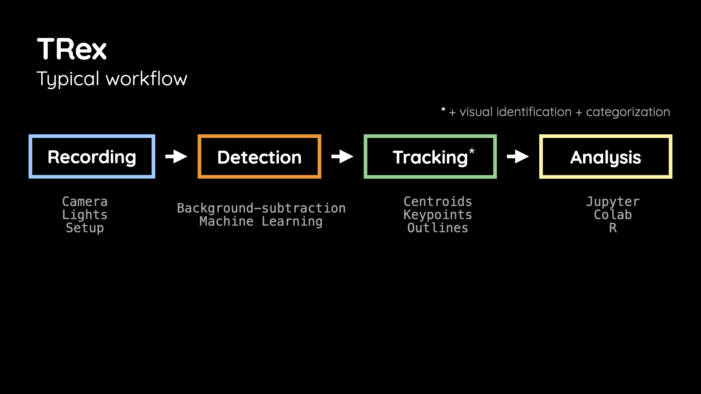
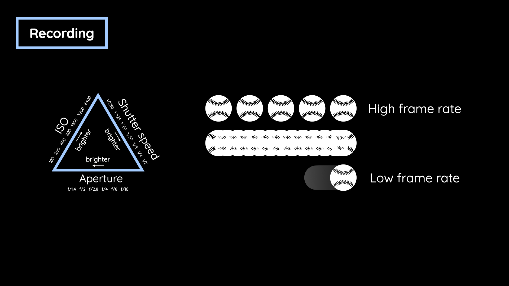
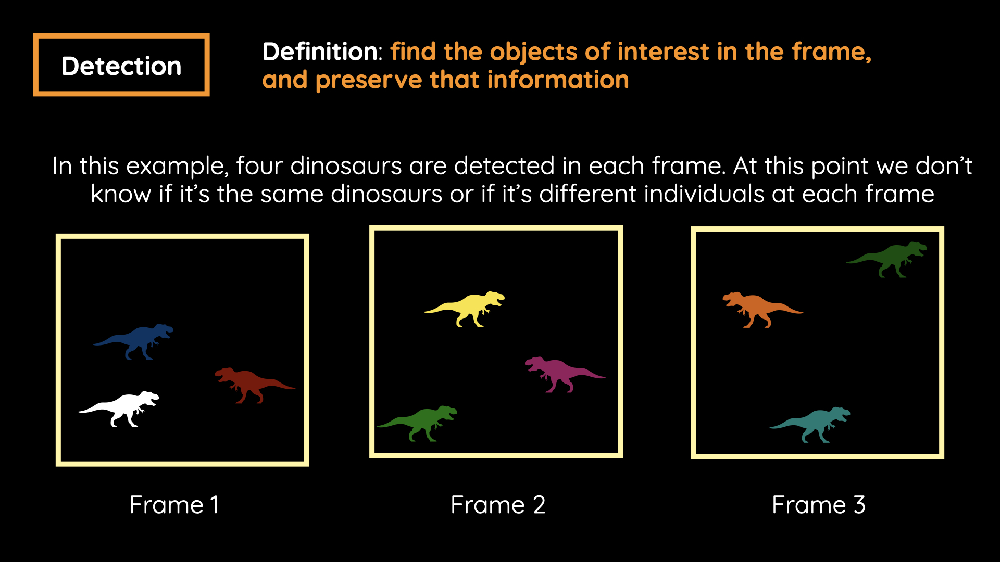
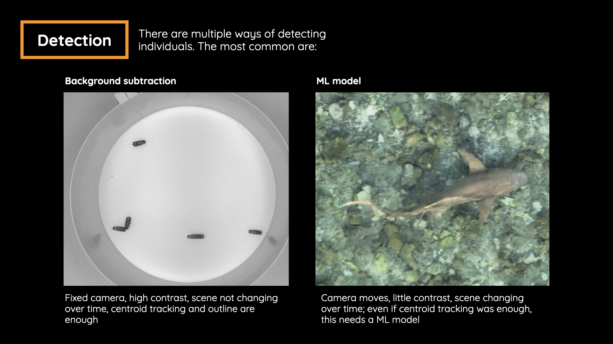
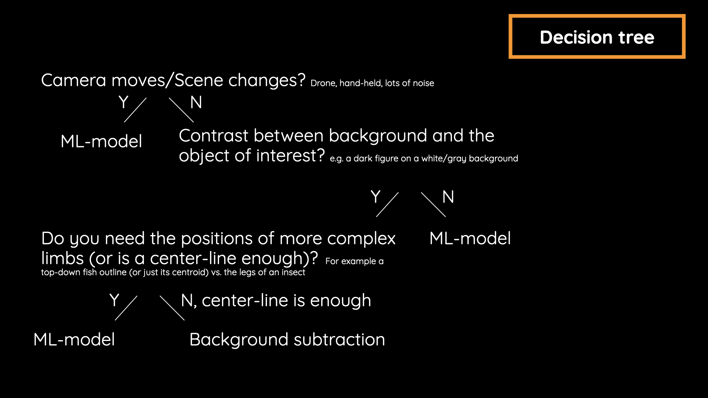
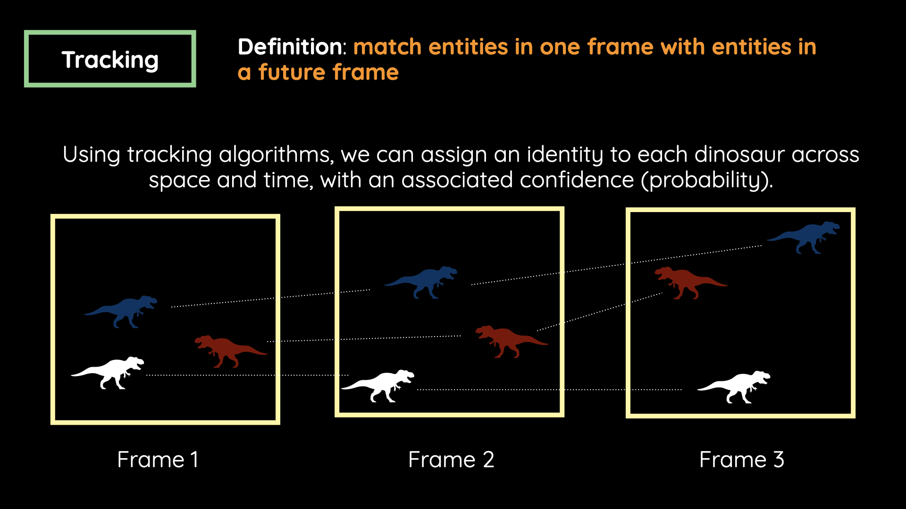

Background subtraction
A fast starting point when the camera is static and the animals contrast strongly with the background.
Installation, annotations, model training, detection and tracking.
The usual workflow is recording → detection → tracking → analysis.

Recording quality affects tracking quality. Choose the frame rate and exposure for the behavior you want to record.
For example, around 10 frames per second may capture walking locusts, but miss a jump. Choose a frame rate that resolves the behavior you want to measure.

Detection finds objects in each individual frame, before their identities are connected over time. TRex converts the video into its optimized .pv format during this phase.

A fast starting point when the camera is static and the animals contrast strongly with the background.
Consider a pretrained or custom model for moving cameras, low contrast or changing backgrounds.


Tracking matches detected objects across frames.

Install Miniforge, then open Miniforge Prompt on Windows or Terminal on macOS / Linux.
Commands from the quick-start guide:
conda create -n beta -c trex-beta trex
conda activate beta
trexWhen prompted to proceed, type y and press Enter. On later visits, run only the last two commands to open TRex.
Watch the example first, then try the same workflow on a few frames of your own video.
Set detect_format in the TRex GUI for the annotation type, such as boxes, oriented bounding boxes or pose. Define your classes with detect_class, for example bug or shark.
Start by annotating a few frames and exporting them so we can check them together.
In TRex, you annotate one video at a time: open a clip, annotate its frames, then move on to the next clip.
The annotations should reflect the variability in your data. Rather than annotating many frames from one clip, pick a percentage of frames from each clip across the whole dataset. Spread them through each clip, so the set covers the full range of conditions, such as lighting, background, animal density, postures and occlusions.
Shortcuts from the quick-start guide, with FOIs → Annotated selected.
| Action | Control |
|---|---|
| Show annotated frames | FOIs → Annotated (top right) |
| Play / pause | Space |
| Previous / next annotated frame | N / M |
| Previous / next video frame | ← / → |
| Add an annotation box | Hold Ctrl + left-click four points |
Use the notebooks and helper utilities to prepare datasets and train a custom YOLO model for animal detection and tracking in TRex. Load data from Roboflow, a shared Google Drive ZIP, or the Hexbugs example, then prepare, train and evaluate your model.
The notebooks help you check class counts, clean and rebalance datasets, and keep labels and data.yaml synchronized. Follow the cells to configure YOLO training, inspect validation predictions and download the results. Helper code is available for adjusting the workflow to your project.
The basics tutorial covers opening a video, choosing detection settings, tracking individuals and exporting data. Video tutorials are available on the TRex YouTube channel.
A tracklet is a continuous segment of an individual’s trajectory. TRex can export the images for each tracklet.
Search for these settings in TRex’s parameter box:
output_tracklet_images = true
tracklet_max_images = 00 exports every image; a positive limit samples images per tracklet. These are GUI parameter values, not terminal commands.
Export the tracking data after enabling these settings. See the parameter reference below for image size and normalization options.
Look in the output data folder for NumPy .npz archives. These are image arrays with metadata, rather than a folder of PNGs.
<video>_tracklet_images.npz — summary images and tracklet metadata.<video>_tracklet_images_single_*.npz — individual images when exporting all frames.Use the file-format guide’s Python examples to read the arrays and associate images with identities and frame numbers.